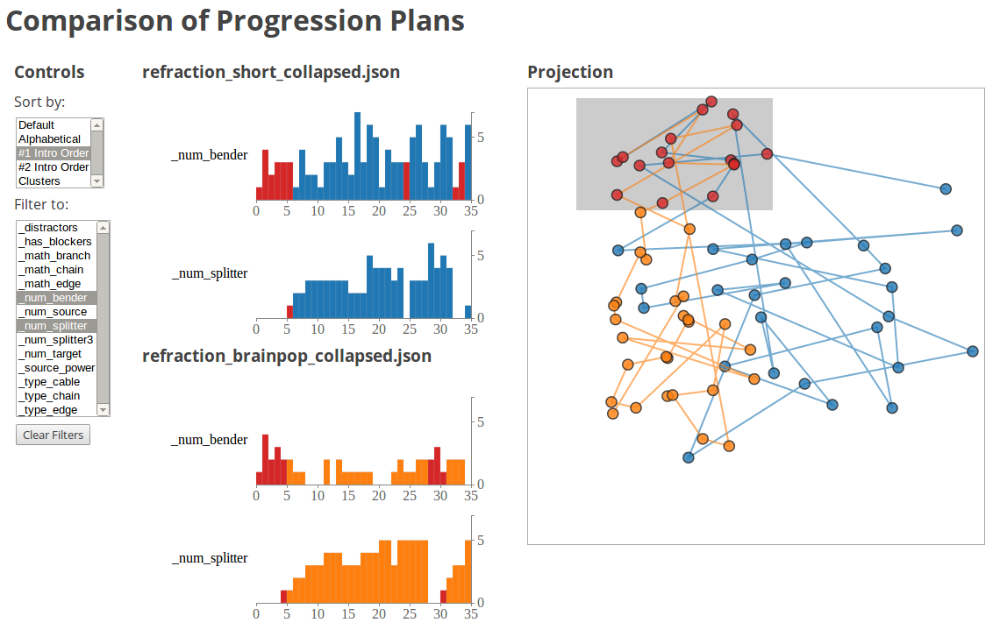

Eric Butler, Rahul Banerjee
This project is an interactive visualization of progressions from games. It allows for two progressions from the same game to be compared.
This is important because it lets game designers ask important questions about their game without having to playtest and re-design in a labor-intensive loop. While playtesting is critical and irreplaceable, certain insights can be gleaned by visualizing progressions in a tool like ours. For instance:The program is web-based, but requires a python web server backend to do the MDS computation. The primary python packages it requires are:
pip install -r req.txt
The entry point is:
src/main.py
It will launch a webserver on:
localhost:5000
So, for example, on a recent ubuntu distro, the program can be setup and run with:
sudo apt-get install python-virtualenv
virtualenv venv/
source venv/bin/activate
pip install -r req.txt
cd src/
./main.py
Then, in a browser, open:
http://localhost:5000/
Several datasets are included in:
src/data/
The main page has links to a few interesting example comparisons.
The last link ("pick datasets manually") lets the user select datasets from a dropdown (automatically generated by scanning the data folder)